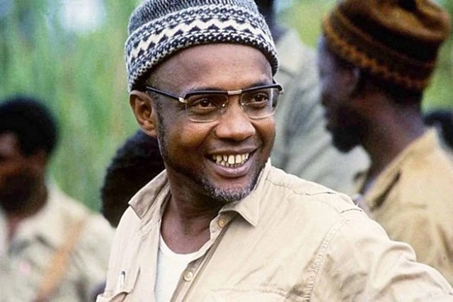
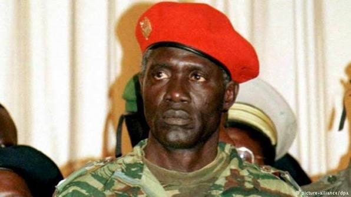
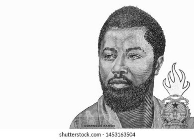

Amílcar Cabral (O Estrategista)

Amílcar Lopes da Costa Cabral nasceu no dia 12 de setembro de 1924, na cidade de Bafatá, na Guiné-Bissau. Filho de pais cabo-verdianos, cresceu entre a Guiné-Bissau e Cabo Verde, duas terras que mais tarde desempenhariam um papel central na sua luta política.
Desde jovem, destacou-se pela sua inteligência, disciplina e interesse pelos estudos. Frequentou o ensino secundário em Cabo Verde e, mais tarde, recebeu uma bolsa para estudar Agronomia em Lisboa, Portugal, no Instituto Superior de Agronomia.
Durante o período universitário, Cabral entrou em contacto com outros estudantes africanos que também lutavam contra o colonialismo. Esse ambiente ajudou a fortalecer a sua consciência política e o seu desejo de ver os povos africanos livres e independentes.
Embora fosse engenheiro agrónomo e político, Cabral foi o cérebro militar por trás das FARP.
Em 1956, Amílcar Cabral fundou o Partido Africano para a Independência da Guiné e Cabo Verde (PAIGC). O objetivo do partido era organizar o povo para conquistar a independência do domínio colonial português.
Inicialmente, a luta foi conduzida de forma pacífica, através de reivindicações políticas e sindicais. No entanto, após o massacre de trabalhadores do cais de Pidjiguiti, em 1959, o movimento decidiu iniciar a luta armada como forma de resistência.
A guerra de libertação começou oficialmente em 1963. Sob a liderança estratégica de Cabral, o PAIGC conseguiu controlar grande parte do território da Guiné-Bissau, organizando escolas, hospitais e estruturas administrativas nas zonas libertadas.
Papel: Fundou o PAIGC e desenhou a estratégia de guerrilha que derrotou o exército colonial.
Legado: É considerado o "Pai da Nação". Defendia que o soldado deveria ser um "militante armado", ou seja, alguém com consciência política, e não apenas um combatente.
Pensamento Político e Ideias
Amílcar Cabral não foi apenas um líder militar, mas também um grande pensador e teórico da libertação africana. Ele defendia que a luta contra o colonialismo devia ser acompanhada por uma transformação social profunda.
Cabral acreditava na valorização da cultura africana como forma de resistência. Para ele, a cultura era a base da identidade de um povo e um instrumento fundamental na luta pela independência.
Também defendia a unidade entre os povos da Guiné-Bissau e de Cabo Verde, acreditando que juntos seriam mais fortes na construção de um futuro justo e próspero.

João Bernardo "Nino" Vieira (O Comandante de Guerra)
João Bernardo Vieira, conhecido como Nino Vieira, nasceu no dia 27 de abril de 1939, em Bissau, na Guiné-Bissau. Desde jovem demonstrou interesse pelos assuntos políticos e pelo futuro do seu país.Nino Vieira juntou-se ao Partido Africano para a Independência da Guiné e Cabo Verde (PAIGC), movimento responsável pela luta contra o domínio colonial português.
Durante a guerra de libertação (1963–1974), destacou-se como comandante militar, participando ativamente nas operações que levaram à independência da Guiné-Bissau.Após a independência, Nino Vieira ocupou cargos importantes no governo. Em 1980, liderou um golpe de Estado e assumiu a presidência da República.
Durante o seu governo, o país enfrentou desafios económicos, políticos e militares, marcados por períodos de instabilidade.
Possivelmente a figura militar mais famosa e controversa da história do país.
Papel: Foi um dos comandantes de campo mais brilhantes durante a luta de libertação (Frente Sul).
Histórico: Após a independência, liderou o golpe de 1980 e governou o país por quase 20 anos. Foi uma figura central em quase todos os momentos militares até ao seu assassinato em 2009.
Francisco Mendes ("Chico Té")

Francisco Mendes, conhecido como Chico Té, nasceu em 1939 na Guiné-Bissau. Desde cedo demonstrou interesse pela liberdade e pelo futuro do seu país.Francisco Mendes juntou-se ao Partido Africano para a Independência da Guiné e Cabo Verde (PAIGC), movimento que liderou a luta contra o domínio colonial português.
Durante a guerra de libertação (1963–1974), participou ativamente na organização política e no apoio às estruturas do movimento nas zonas libertadas.Após a proclamação da independência da Guiné-Bissau em 1973, reconhecida por Portugal em 1974, Francisco Mendes ocupou cargos importantes no novo governo.
Em 1978, tornou-se Primeiro-Ministro da Guiné-Bissau. Durante o seu mandato, trabalhou para fortalecer o Estado, promover a unidade nacional e enfrentar os desafios económicos do período pós-independência.
Um herói de guerra extremamente querido pela população e pelas tropas.
Papel: Foi o primeiro Comissário Principal (Primeiro-Ministro) da Guiné-Bissau independente.
Importância: Era visto como um líder moderador e um grande estratega na Frente Norte. A sua morte prematura num acidente de viação em 1978 (ainda hoje alvo de teorias de conspiração) é vista por muitos como o início da instabilidade política no país.

Ansumane Mané (O Líder da Junta Militar)
O brigadeiro-general que desafiou Nino Vieira.
Papel: Liderou a Junta Militar durante a Guerra Civil de 1998-1999.
Impacto: Conseguiu o apoio de quase todo o exército nacional contra as forças do então presidente. É lembrado como um militar que tinha uma ligação muito forte com a "tropa de base", mas acabou morto em 2000 após novos desentendimentos políticos.

Domingos Ramos e Osvaldo Vieira
Heróis da primeira geração que morreram durante a luta armada.
Domingos Ramos: Um dos primeiros comandantes a cair em combate; hoje dá nome à principal escola militar e a um liceu em Bissau.
Osvaldo Vieira: Um jovem comandante brilhante que morreu por doença durante a guerra; o aeroporto internacional de Bissau carrega o seu nome em homenagem.